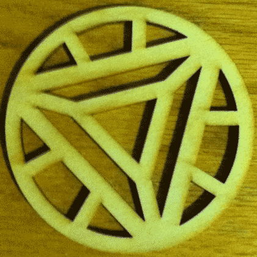
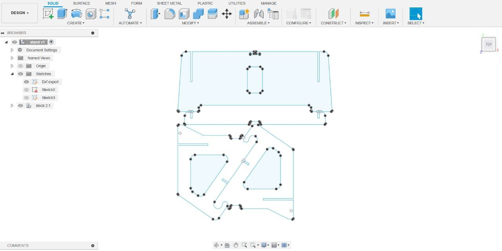
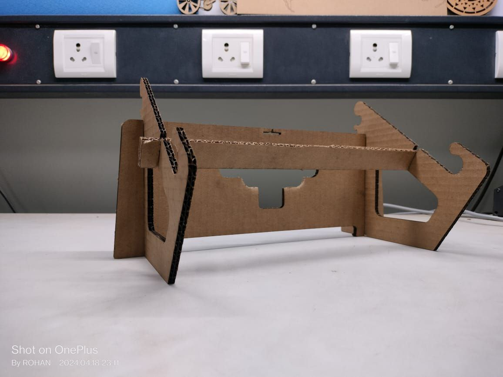
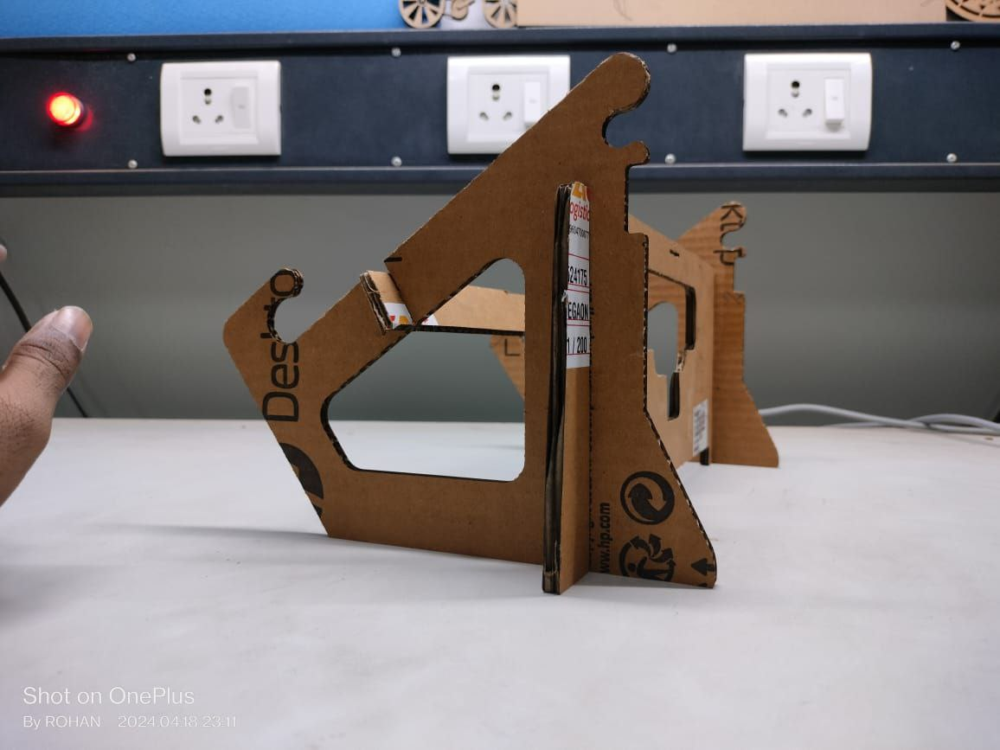
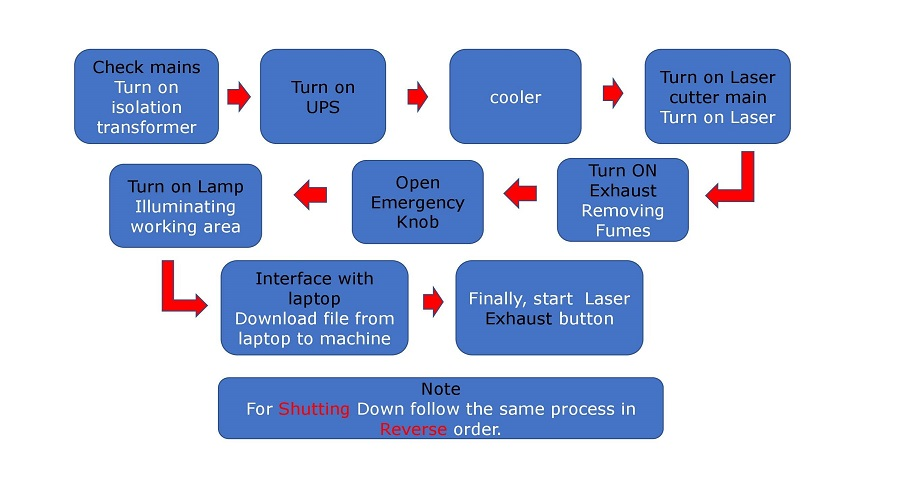
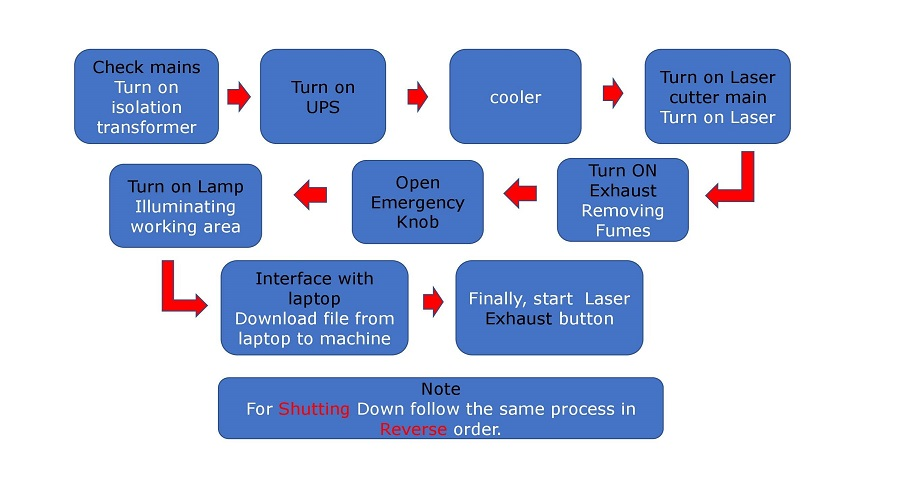

Learning to operate a laser cutting machine was a hands-on experience. Initially daunting, I meticulously
followed safety protocols and familiarized myself with the machine's controls. With guidance, I practiced
material setup, adjusted cutting parameters, and mastered focusing the laser. Through trial and error, I
honed my skills, running test cuts to optimize settings. Each successful cut boosted my confidence, while
mistakes taught valuable lessons. Regular practice and patience were key as I navigated software intricacies
and fine-tuned techniques. Over time, operating the machine became second nature, empowering me to
efficiently produce precise cuts with ease.
Day 2: Laser Cutting(2D Model)

Using Fusion and a laser cutter, crafting an Iron Man symbol is an exciting project blending creativity with technical precision. Begin by sketching the iconic symbol's design, ensuring clean lines and accurate proportions. Transfer the design to Fusion , refining details and optimizing for laser cutting. Select a suitable material, typically metal or acrylic, and adjust cutting parameters accordingly. Once prepared, unleash the laser cutter to intricately carve out the symbol. The result is a stunning homage to Iron Man's emblem, showcasing Fusion design versatility and the laser cutter's precision for bringing intricate designs to life.
Day 3: Laser Cutting (Press-Fit Model)



Creating a press-fit laptop stand module using Fusion for laser cutting is a seamless process with the right approach. In Fusion , begin by designing the stand with precise measurements, ensuring it accommodates the laptop securely. Utilize the sketching tools to outline the structure, considering angles and dimensions crucial for stability.
Next, incorporate press-fit joints by creating interlocking tabs and slots. These should be meticulously measured to achieve a snug fit without being too tight. Fusion 's parametric modeling capabilities allow for easy adjustment of dimensions to fine-tune the fit as needed.
Once the design is finalized, prepare the file for laser cutting. Fusion simplifies this step by providing export options compatible with laser cutting machines. Ensure the settings are appropriate for the chosen material, typically a sturdy yet lightweight option like plywood or acrylic.
After laser cutting, assemble the stand by interlocking the press-fit joints. The precision of Fusion 's design ensures the parts fit together seamlessly, creating a stable and functional laptop stand module. This process not only demonstrates Fusion 's versatility but also highlights the efficiency of incorporating press-fit joints for rapid assembly without the need for additional fasteners.
 
